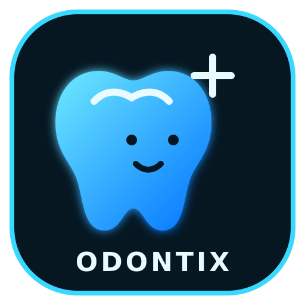
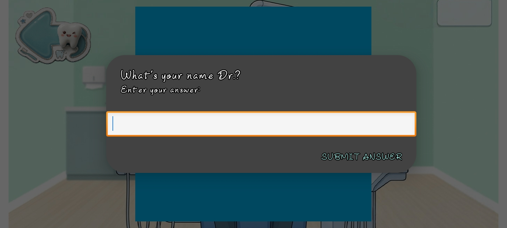
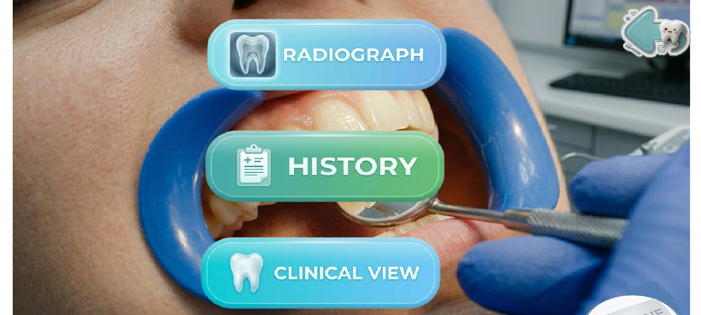
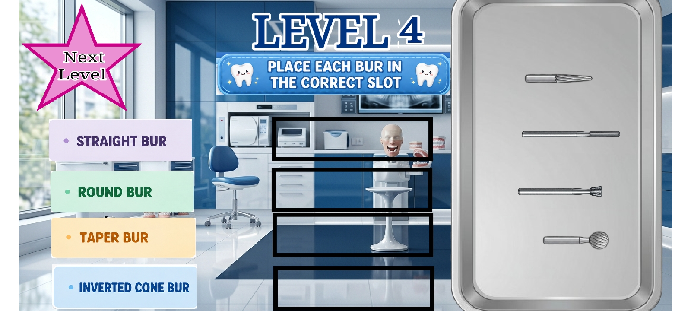
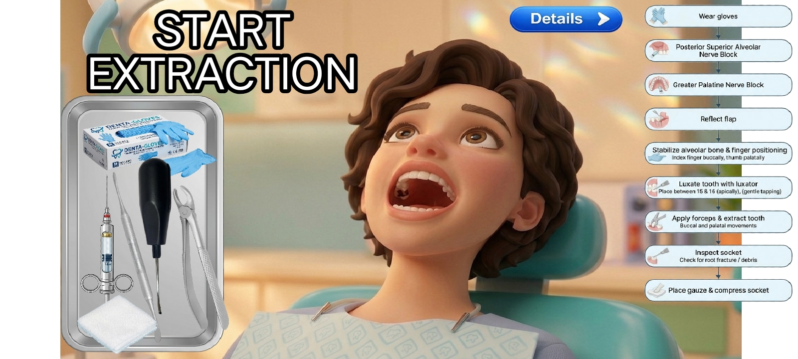

🪞
Mouth Mirror Activity
The first preclinical activity introduces interaction with a mouth-mirror element. The task uses a tap-based format, with ten taps forming part of the activity.

ODONTIX • ANDROID DENTAL GAMEStep into a virtual dental clinic. Explore instrument-based activities, preclinical tasks and dentistry-themed scenarios through an interactive Android game developed under the Odontix name.
Free APK download • Android • Version 1.0
Dental Clinic Simulator is an interactive dentistry-themed Android project by Odontix. It brings together selected preclinical exercises, dental instrument activities and simplified virtual clinical scenarios in a game environment.
The simulator is organised around activities rather than a conventional textbook format. Players interact with on-screen elements, explore different dental themes and follow the tasks provided within the game.
The preclinical section includes a mouth-mirror activity and a separate activity featuring dental bur categories. The clinical section presents selected virtual scenarios related to restorative dentistry, endodontics, extraction and tooth mobility.
Odontix also provides a separate learning guide with explanations, examples and a quiz. The guide is designed to help readers revise introductory concepts alongside their exploration of the game.
Read more about the creator and the project on the About Odontix page.
The following descriptions refer to activities represented in the current simulator. They describe the game's educational themes, not a complete clinical procedure.
The first preclinical activity introduces interaction with a mouth-mirror element. The task uses a tap-based format, with ten taps forming part of the activity.
Explore the bur labels used in the simulator: Straight, Round Tapered, Fissure and Other. These are the game's displayed categories, not a universal classification system.
The clinical section includes selected case labels and dentistry-themed situations. Each scenario is intended to be explored as a simulated activity.
A separate game screen represents a tooth-restoration theme. It allows players to explore the restorative activity shown in the simulator.
The simulator includes a Tooth 36 root-canal-related scenario, identified in the game as Visit 2. It is a virtual representation and should not be treated as a clinical protocol.
The separate Odontix guide covers selected instruments, bur terminology, FDI tooth numbering and a hypothetical endodontic learning case.
The Odontix Dental Learning Guide is a companion resource for readers who want to review the terminology and concepts related to selected activities in the simulator.
Learning material is supplementary. Always refer to recognised textbooks, current clinical guidance and supervised teaching for professional dental education.
These screenshots show selected screens from the Android game. They give visitors a direct view of its interface and the activities available in the project.





Screenshots are presented to explain the actual game interface. Activity details may vary according to the selected screen.
The simulator uses selected dental case labels to give its clinical section a case-based structure. These are game scenarios, not independently verified patient records.
These labels identify content in the game. They should not be interpreted as complete diagnoses, treatment recommendations or instructions for performing dental procedures.
For a more detailed discussion of selected dental concepts, visit the learning guide.
Root canal treatment is one of the subjects represented in the simulator. The following terms provide a broad introduction to concepts associated with endodontic care; they are not a sequence of instructions for treating a patient.
New players can use the following outline to begin exploring the simulator.
Use the download link on this page to obtain the Android installation file.
Open the downloaded file and review the installation prompts displayed by your device.
Open the game and explore the available preclinical and clinical sections.
Use the companion learning guide to review relevant dental terminology and introductory concepts.
Download the Odontix Android game and explore its dentistry-themed activities and virtual dental scenarios.
Download Android APKThe APK is distributed through the project's GitHub release. Install only files from sources you trust.
Step 1: Select the Download APK link and allow the file to finish downloading.
Step 2: Locate the downloaded APK in your Android device's Downloads folder.
Step 3: Open the file. Android may ask you to review or enable permission for installing an application from that source.
Step 4: Follow the device's installation instructions and open the application after installation.
Android menus and security prompts differ across devices and operating-system versions. Read each prompt carefully.
It is an Android dentistry-themed game with selected preclinical activities, instrument-related tasks and virtual clinical scenarios.
The APK is offered as a free download through the project's GitHub release link. Device compatibility and installation requirements still apply.
Available content includes a mouth-mirror activity, bur-related screens, restorative content and selected virtual dental scenarios.
Dental students, beginners and people interested in dentistry-themed games may enjoy exploring its activities.
No. The simulator is an educational and entertainment resource. It does not provide clinical qualification, supervised experience or permission to treat patients.
Visit the Odontix Dental Learning Guide for introductory explanations of instruments, burs, FDI numbering and a hypothetical endodontic case.
You can contact Odontix by email or through the Instagram account listed below.
The companion learning pages use recognised dental organisations and educational resources for checking terminology and clinical background. The explanations on Odontix are independently written for this project and are not reproduced from these websites.
References are provided for further reading and fact-checking. Always consult current professional guidance and standard dental textbooks for academic or clinical decisions.
Have a question, found an error or want to share feedback about the game or its learning resources? You can get in touch.
Email
tanugandhi1000@gmail.com
Instagram
@odontix.dental
Odontix is a dental education and simulation project created by Dr. Taniya Gandhi, BDS. This website provides information about the Android simulator and its companion learning resources.